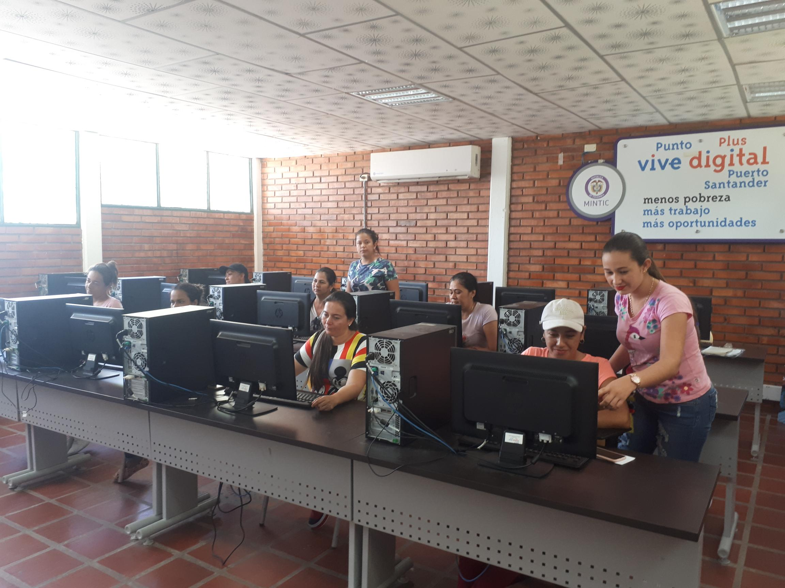

“El camino para crear una "Cultura de la educación inicial" en el marco de la atención integral, es a través de cuatro actividades rectoras que además de ser actividades inherentes a los niños y las niñas, posibilitan aprendizajes por sí mismas.” esto nos menciona el ministerio de educación en su artículo sobre las actividades rectoras, esto a su vez nos demuestra la importancia que están teniendo estas actividades en la actualidad, en algunos casos las actividades rectoras no son reconocidas como estrategias pedagógicas, pero esto es una vaga concepción, en realidad estas facilitan el proceso de enseñanza y aprendizaje en los niños , ya que éstas atienden a la educación inicial estos mismos.
El juego

El juego es un reflejo de la cultura y la sociedad y en él se representan las construcciones y desarrollos de los entornos y sus contextos. Las niñas y niños juegan a lo que ven y al jugar a lo que viven resignifican su realidad. Por esta razón, el juego es considerado como medio de elaboración del mundo adulto y de formación cultural, que inicia a los pequeños en la vida de la sociedad en la cual están inmersos. En el juego hay un gran placer por representar la realidad vivida de acuerdo con las propias interpretaciones, y por tener el control para modificar o resignificar esa realidad según los deseos de quien juega. La niña y el niño representan en su juego la cultura en la que crecen y se desenvuelven. Desde esta perspectiva, el juego permite aproximarse a la realidad del niño y la niña.
La literatura

Las niñas y los niños son especialmente sensibles a las sonoridades de las palabras y a sus múltiples sentidos. Necesitan jugar con ellas, ser nutridos, envueltos, arrullados y descifrados con palabras y símbolos portadores de emoción y afecto. Por ello la literatura es también una de las actividades rectoras de la infancia. Las personas que están cerca de los más pequeños constatan cotidianamente que jugar con las palabras -descomponerlas, cantarlas, pronunciarlas, repetirlas, explorarlas- es una manera de apropiarse de la lengua. Quizás por ello suele decirse que las niñas y los niños se parecen a los poetas en su forma de "estrenar" y de asombrarse con las palabras, y de conectarlas con su experiencia vital. En sentido amplio, la literatura en la primera infancia abarca no solo las obras literarias escritas, sino también la tradición oral y los libros ilustrados, en los que se manifiesta el arte de jugar y de representar la experiencia a través de símbolos verbales y pictóricos.
El arte

Observar las rondas y los juegos de tradición oral permite constatar cómo la literatura, la música, la acción dramática, la coreografía y el movimiento se conjugan. Desde este punto de vista, las experiencias artísticas -artes plásticas, literatura, música, expresión dramática y corporal- no pueden verse como compartimientos separados en la primera infancia, sino como las formas de habitar el mundo propias de estas edades, y como los lenguajes de los que se valen los niños y las niñas para expresarse de muchas formas, para conocer el mundo y descifrarse. Dentro del ciclo vital es en la primera infancia cuando los seres humanos están más ávidos y más dispuestos a esas formas de interactuar con el mundo sensible. El hecho de "estrenar", palpar e interrogarse por cada cosa, de fundir la comprensión con la emoción y con aquello que pasa por los sentidos hace de la experiencia artística una actividad rectora de la infancia.
La exploración del medio

Las niñas y los niños llegan a un mundo construido. Un mundo físico, biológico, social y cultural, al que necesitan adaptarse y que los necesita para transformarse. En él encuentran elementos y posibilidades para interactuar gracias a sus propias particularidades y capacidades. Los sentidos gustar, tocar, ver, oler, oír- cumplen un papel fundamental en la exploración por cuanto sirven para aproximarse al medio de diversas maneras. Explorar permite a las niñas y los niños cuestionarse, resolver problemas, interactuar, usar su cuerpo, investigar, conocer, ensayar, perseverar, ganar independencia. Esta experiencia implica un proceso de construcción de sentido acerca de lo que pasa en el mundo y de lo que significa ser parte de él. El juego, la literatura, el arte y la exploración del medio son actividades en muchos casos interdependientes. Así por ejemplo, cuando la niña o el niño juega o explora, puede hacerlo manipulando materiales plásticos como pinturas o arcillas, con lo cual se acerca a una experiencia artística. También hay casos en donde el juego se combina con la expresión literaria y musical
Texto tomado del documento Fundamentos políticos, técnicos y de gestión de la estrategia de atención integral a la primera infancia.